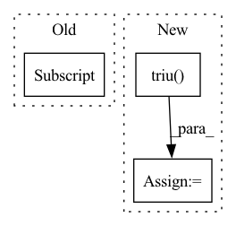

Pattern ID :22775
Before Change
pos_index = labels == labels[i]
pos_index[i] = 0
neg_index = labels != labels[i]
pos_pair_ = sim_mat[i][pos_index]
neg_pair_ = sim_mat[i][neg_index]
alpha_p = torch.relu(-pos_pair_ + 1 + self.margin)
After Change
m = labels.size(0)
mask = labels.expand(m, m).t().eq(labels.expand(m, m)).float()
pos_mask = mask.triu(diagonal=1)
neg_mask = (mask - 1).abs_().triu(diagonal=1)
if self.similarity == "dot":
sim_mat = torch.matmul(feats, torch.t(feats))
elif self.similarity == "cos":
feats = F.normalize(feats)
sim_mat = feats.mm(feats.t())
else:
raise ValueError("This similarity is not implemented.")
pos_pair_ = sim_mat[pos_mask == 1]
neg_pair_ = sim_mat[neg_mask == 1]
alpha_p = torch.relu(-pos_pair_ + 1 + self.margin)
alpha_n = torch.relu(neg_pair_ + self.margin)
margin_p = 1 - self.margin
margin_n = self.margin
loss_p = torch.sum(torch.exp(-self.scale * alpha_p * (pos_pair_ - margin_p)))
loss_n = torch.sum(torch.exp(self.scale * alpha_n * (neg_pair_ - margin_n)))
loss = torch.log(1 + loss_p * loss_n)
return loss
In pattern: SUPERPATTERN
Frequency: 3
Non-data size: 3
Instances Fragment ID: 72253388
Project Name: qianjinhao/circle-loss
Commit Name: 55a6035c552f781d6c761475f88b33b8f684fbe7
Time: 2020-04-02
Author: qianjinhao@126.com
File Name: circle_loss.py
M Class Name: CircleLoss
N Class Name: CircleLoss
M Method Name: forward(3)
N Method Name: forward(3)
M Parent Class: nn.Module
N Parent Class: nn.Module
M File Name: circle_loss.py
N File Name: circle_loss.py
M Start Line: 16
M End Line: 40
N Start Line: 17
N End Line: 38
Before Change
similarity_matrix = feature @ feature.transpose(1, 0)
label_matrix = (label.unsqueeze(1) == label.unsqueeze(0)).int()
eye_label = torch.eye(label_matrix.shape[0] , dtype=label_matrix.dtype, device=label_matrix.device)
label_matrix += eye_label
similarity_matrix = similarity_matrix.view(-1)After Change
label_matrix = label.unsqueeze(1) == label.unsqueeze(0)
positive_matrix = label_matrix.triu(diagonal=1)
negative_matrix = label_matrix.logical_not().triu(diagonal=1)
similarity_matrix = similarity_matrix.view(-1)
positive_matrix = positive_matrix.view(-1)
negative_matrix = negative_matrix.view(-1) Fragment ID: 72253407
Project Name: tinyzeamays/circleloss
Commit Name: d25dcfcf42c4231b5303a2f67f63dc65e2662ec8
Time: 2020-04-03
Author: 1049793129@qq.com
File Name: circle_loss.py
M Class Name: AnonimousClass
N Class Name: AnonimousClass
M Method Name: convert_label_to_similarity(2)
N Method Name: convert_label_to_similarity(2)
M Parent Class:
N Parent Class:
M File Name: circle_loss.py
N File Name: circle_loss.py
M Start Line: 40
M End Line: 47
N Start Line: 40
N End Line: 48
Before Change
// TODO Check limit cases like n = 1, 2, 3 ; m = k/2 - 1, k/2, k/2 + 1
// Compute just the projection from SO(n) / SO(k)
n, m = x.size()
low = x[:, :m//2] .tril(-1)
up = x[:, :m//2 + m%2].triu(1)
// Compute the reflection of low
low = low.flip(-1).flip(-2)After Change
if self.inverted:
x = x.t()
low = x[:, :self.n//2].tril(-1)
up = x[:, :self.n//2 + self.n%2].triu( 1)
// Compute the reflection of low
low = low.flip(-1).flip(-2)
// S is square upper triangular
S = torch.cat([up, low], dim=1) Fragment ID: 72253378
Project Name: lezcano/geotorch
Commit Name: ada013178cb25a391184cd6ffcd920ccc2109e69
Time: 2020-03-11
Author: lezcano-93@hotmail.com
File Name: mantorch/orthogonal.py
M Class Name: Stiefel
N Class Name: Stiefel
M Method Name: frame(3)
N Method Name: frame(3)
M Parent Class: SO
N Parent Class: BaseManifold
M File Name: mantorch/orthogonal.py
N File Name: mantorch/orthogonal.py
M Start Line: 144
M End Line: 167
N Start Line: 95
N End Line: 102